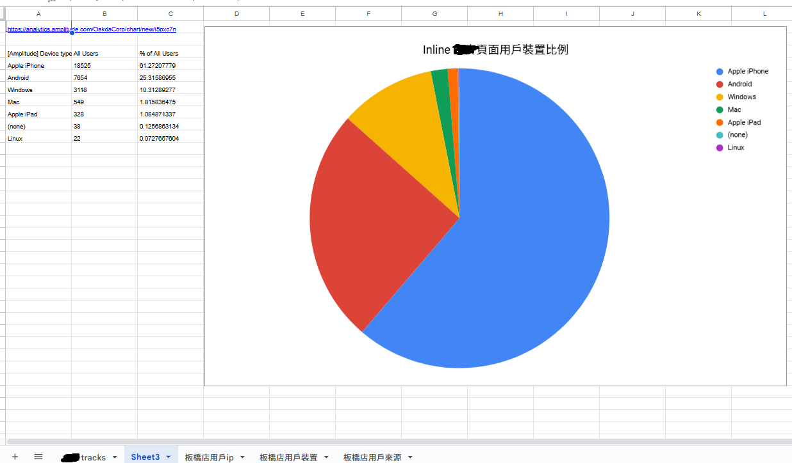

💡 核心問題解答
Q: 什麼是社交證明，為何對廣告效果如此重要？
社交證明是指人們傾向於參考他人行為來指導自己決策的心理現象。在Meta廣告中，透過展示用戶評論、按讚數、分享量等社交互動信號，能有效降低用戶的決策門檻，提升轉換率。
Q: UGC（用戶產出內容）為什麼比品牌製作內容更有效？
根據Meta官方數據，UGC內容的CTR比品牌製作內容提升65%，主要因為UGC具有更高的真實性和可信度，用戶更容易產生共鳴和信任感，從而提高廣告互動率和轉換率。
Q: 如何避免違反Meta的誘導互動政策？
避免使用「按讚支持」、「留言+1」等明顯誘導語句，改用自然的互動引導如「分享你的看法」、「告訴我們你的經驗」。重點是提供真實價值而非刻意操控互動行為。
📊 用戶行為追蹤驅動的社交證明優化
基於數據分析的社交證明策略建構

🎯 用戶行為追蹤實戰：基於數據分析優化社交證明展示策略
📈 行為追蹤維度分析
- 設備屬性：iOS vs Android用戶的社交證明偏好差異
- 來源分類：Facebook、Instagram、Audience Network不同平台行為
- 互動模式：點讚、分享、評論等不同社交行為權重
- 時間模式：用戶活躍時段與社交證明展示時機
- 內容偏好：視覺vs文字型社交證明的效果差異

🔧 跳轉追蹤實戰：透過裝置分類優化社交證明個人化展示
🏆 成功案例：美妝品牌行為追蹤優化
某美妝品牌透過插入跳轉追蹤系統，發現iOS用戶更偏好影片評價形式的社交證明，Android用戶則更關注評分數據。基於此洞察調整創意策略後，整體轉換率提升47%，iOS用戶轉換率更提升63%。
🎥 UGC素材創意資料庫與優化策略
用戶產出內容的收集、製作與優化
65%
UGC內容CTR提升
資料來源：Meta Creative Performance Report 2024
🎯 UGC收集與製作策略
- 用戶激勵：設計hashtag挑戰、獎勵機制鼓勵用戶分享
- 內容篩選：建立品質評估標準篩選最佳UGC內容
- 授權管理：確保獲得用戶同意並保留使用權
- 品質提升：對原始UGC進行適度編輯優化
- 多版位適配：將UGC內容調整為適合不同廣告版位的格式
影片見證
真實用戶使用產品的短影片見證，最高轉換效果
使用照片
用戶分享的產品使用照片，展示真實效果
評論截圖
正面評價和五星評論的視覺化呈現
評分展示
平均評分、評論數量的數據化展示
🧠 心理學原理：從眾效應
當用戶看到其他人正在使用並推薦某個產品時，會產生「如果這麼多人都在用，那一定不錯」的從眾心理。UGC內容天然具備這種說服力，因為它來自真實用戶而非品牌本身。
🔄 Post ID重用機制：累積社交證明降低成本
跨廣告組社交證明累積策略
💡 Post ID操作機制
- 選擇表現優異、已累積大量按讚與留言的廣告貼文ID
- 在新廣告中沿用高互動貼文ID
- 新受眾立即看見數百個讚和熱烈討論的留言
- 演算法給予較低的曝光成本和更多的自然推廣
- 持續互動管理，及時隱藏或刪除負面違規留言
50%
CPA下降幅度
資料來源：AdLeaks社交證明實戰數據
⚠️ 操作風險與注意事項
所有使用該Post ID的廣告共享同一留言區，需要適當的留言控管來確保社交證明正面。如果出現負面或違規留言，會影響到所有相關廣告的效果。同時要確保貼文內容品質過硬且符合政策規範。
📸 Instagram互動式廣告策略與優化
Reels與Stories的社交證明整合
📱 Instagram互動式廣告策略
- 投票貼紙：讓用戶對產品特色或使用情境進行投票
- 問答功能：收集用戶對產品的疑問並即時回答
- 滑動互動：利用「向上滑動」引導用戶進行下一步行動
- 倒數計時：為限時優惠或活動創造緊迫感
- 位置標籤：展示品牌門市位置或用戶使用場景
投票互動
「你會選擇哪個顏色？」引導用戶參與決策
問答收集
「關於產品你最想知道什麼？」收集用戶需求
倒數計時
「限時優惠倒數24小時」創造緊迫感
位置展示
「在這裡享受我們的服務」展示實體據點
🧠 心理學原理：參與感提升
當用戶主動參與投票、問答等互動時，會產生更強的參與感和品牌連結。這種互動不僅能收集有價值的用戶偏好數據，還能提升用戶對品牌的記憶度和好感度。
💬 Messenger私訊誘導系統建置
自動化對話流程與轉換優化
🎯 Messenger轉換策略
- 免費價值提供：「免費獲取專業建議」引導用戶發起對話
- 個人化諮詢：提供量身定制的產品建議或免費諮詢服務
- 社交元素：「已有1000+人獲得專屬優惠」類型提示
- 急迫感營造：限量、限時等稀缺性心理觸發
- 個人化開場：根據用戶行為定制對話開場白
- 自動化流程：設計多層次對話樹引導轉換
🧠 心理學原理：互惠原則
當品牌主動提供有價值的資訊或服務（如免費諮詢），用戶會產生回報的心理傾向。結合社交證明（「已有X人受益」），能有效提升用戶參與私訊對話的意願。
🤖 自動化對話流程設計
歡迎訊息
感謝參與+社交證明數據展示
需求確認
了解用戶具體需求和痛點
解決方案
提供個人化產品推薦
優惠提供
限時優惠促成立即轉換
🏆 成功案例：健身品牌Messenger轉換優化
某健身品牌透過「已有5000+學員成功減重」的社交證明誘導用戶私訊，設計7步自動化對話流程，包含需求調查、個人化建議、成功案例分享、限時優惠。最終將Messenger轉換率提升156%，平均客單價增加43%。
🎨 動態創意優化與多版位適配策略
AI驅動的創意組合與社交證明整合
🎯 DCO優化策略
- 素材多樣性：準備充足且多元化的廣告素材（圖片、影片、文案各多版本）
- 每個廣告組建議上傳20-30條以上素材
- 包括不同風格的圖片與影片，以及多種標題文案
- 素材庫豐富能讓系統有更多組合測試空間
- 定期更新素材庫以保持內容新鮮度
8.9%
轉化率提升
素材量增加3倍後的平均提升幅度
🧠 心理學原理：個人化適配
不同用戶對於視覺元素、文案風格、社交證明類型有不同偏好。動態創意優化能夠根據用戶行為數據，自動選擇最符合個人偏好的創意組合，提升廣告的相關性和吸引力。
🏆 成功案例：電商動態創意優化
某電商品牌在一個廣告組中上傳了40張產品圖、10支產品短影片，以及每種產品各兩種不同賣點的文案。系統自動組合測試後發現，某幾張圖搭配某類標題在特定受眾中轉換率極高。演算法遂重點使用這些組合來投放，銷售額明顯提升。